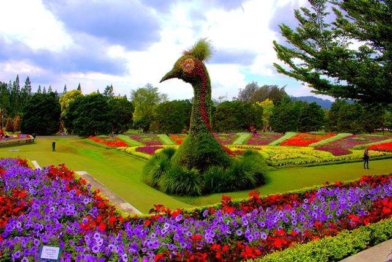

Sejarah & Asal-Usul
Meskipun kerajaan Sunda cukup luas pada saat itu, namun ternyata harus kalah setelah menerima serangan dari kerajaan Banten. Peperangan antara dua kerajaan ini ternyata mampu menghabisi seluruh pasukan dari kerajaan Sunda. . Anggota kerajaan, prajurit sampai catatan mengenai kota Pajajaran tidak ada yang tersisa. Seluruh prasasti dan catatan kerajaan tertimbun berbagai tumpukan tanah, ratusan manusia dan juga hanyut.
Hilangnya jejak dari kota Pajajaran, secara tidak langsung mengakibatkan suasana kota ini sepi. Sampai pada akhirnya, orang Belanda datang dan menemukan prasasti peninggalan kerajaan Sunda. Setelah itu muncullah kembali kota Pajajaran dengan nama baru yaitu Bogor. Dugaan ini didukung oleh adanya prasasti yang ditemukan di sekitar Bogor, yang akhirnya membuktikan bahwa kota Pajajaran adalah Bogor dulu.
Letak Geografis
Untuk Kota Bogor sendiri (Sunda: ᮊᮧᮒ ᮘᮧᮍᮁᮧ) terletak 59 km sebelah selatan Secara geografis Kota Bogor terletak di antara 106’ 48’ BT dan 6’ 26’ LS, kedudukan geografis Kota Bogor di tengah-tengah wilayah Kabupaten Bogor serta lokasinya sangat dekat dengan Ibukota Negara, merupakan potensi yang strategis bagi perkembangan dan pertumbuhan ekonomi dan jasa, pusat kegiatan nasional untuk industri, perdagangan, transportasi, komunikasi, dan pariwisata. Jakarta, dan wilayahnya berada di tengah-tengah wilayah Kabupaten Bogor.
Dahulu luasnya 21,56 km², namun kini telah berkembang menjadi 118,50 km². Bogor dikenal dengan julukan Kota Hujan, karena memiliki curah hujan yang sangat tinggi. Pada masa Kolonial Belanda, Bogor dikenal dengan nama Buitenzorg (pengucapan: boit’n-zôrkh”, bœit’-) yang berarti “tanpa kecemasan” atau “aman tenteram”.
Wisata

Menyusuri Keindahan Kota Bogor yang indah serta Pesona Wisata yang Viral dan Tak Terlupakan.
Apa saja sih wisata-wisata yang ada di bogor jawa barat ini yang wajib kamu kunjungi???>
simak beberapa wisata di bawah ini yang harus dikunjungi saat di bogor:
1. Taman Safari Indonesia
Taman Safari Indonesia (TSI) bukan sekadar sebuah tempat rekreasi. Melainkan, tempat konservasi satwa sekaligus edukasi bagi seluruh anggota keluarga.
2. Kebun Raya Bogor
Kebun Raya Bogor adalah tempat yang menyajikan informasi, pengalaman, dan manfaat dari berbagai jenis tumbuhan. Terletak di Kota Bogor, Indonesia, kebun ini dioperasikan oleh Badan Riset dan Inovasi Nasional (BRIN). Luasnya mencapai 87 hektar dan memiliki koleksi lebih dari 15.000 jenis pohon dan tumbuhan1.
Di Kebun Raya Bogor, Anda dapat menikmati berbagai taman tematik dan museum
3. Cimory Dairyland Farm Theme Bogor

Cimory Dairyland Farm Theme Park Puncak (sebelumnya dikenal sebagai Cimory Dairyland) adalah destinasi keluarga yang menyenangkan yang terletak di kawasan sejuk Puncak dekat Bogor, Jawa Barat, Indonesia. Dikembangkan di bawah naungan perusahaan yogurt terbesar di Indonesia, Cimory, taman tema unik ini menggabungkan pesona pedesaan Eropa dan Amerika dengan kegiatan rekreasi dan pengalaman pendidikan.
4. Devoyage Bogor
Devoyage Bogor adalah destinasi yang menawarkan suasana khas Eropa yang sangat Instagramable. Terletak di Jalan Raya Boulevard CBD, Bogor Nirwana Residence, Mulyaharja, Kecamatan Bogor Selatan, Kota Bogor, Jawa Barat.
5. Nicole Park River bogor
Nicole's River Park adalah tempat wisata yang baru saja dibuka di Puncak, Bogor. Berlokasi di Jalan Raya Puncak-Cianjur, Cipayung Datar, Kecamatan Megamendung, Kabupaten Bogor, Jawa Barat, tempat ini mengusung konsep “One Stop Recreation Park” dengan berbagai spot foto Instagramable yang menarik. Anda akan menemukan miniatur landmark dari berbagai negara, termasuk Jepang, Korea, Santorini (Yunani), China, dan negara-negara Eropa lainnya.
6. Situ Rawa Gede Jonggol Lake
Situ Rawa Gede Jonggol adalah danau yang terletak di desa Sirnajaya, Kecamatan Sukamakmur, Kabupaten Bogor, Jawa Barat. Danau ini memiliki arti “situ” atau “setu” yang berarti telaga, dan “gede” yang berarti besar. Di sini, Anda dapat menikmati berbagai aktivitas seperti berlayar, memancing, berkemah, dan berendam di bawah air terjun alami. Suasana alam yang tenang dan keindahan pemandangan akan memanjakan pengunjungnya.
7. kebon Raya Cibodas
Kebun Raya Cibodas adalah taman hijau nan indah yang luasnya hampir 80 hektar dengan topografi lapangan yang bergelombang dan berbukit-bukit. Terletak di Cibodas, Kabupaten Bogor, Jawa Barat, kebun raya ini menjadi salah satu tujuan wisata utama di kawasan Cibodas. Di sini, Anda dapat menikmati keindahan alam, berfoto di spot-spot Instagramable, dan menjelajahi berbagai taman tematik. Kebun Raya Cibodas juga memiliki koleksi tumbuhan yang bernilai ilmiah tinggi dan berperan dalam konservasi serta edukasi.
8. Taman Bunga Nusantara

Taman Bunga Nusantara adalah tempat wisata yang menampilkan berbagai tumbuhan dan bunga dari negara-negara di Asia Tenggara. Terletak di Cibodas, Kabupaten Bogor, Jawa Barat, taman ini memiliki luas hampir 80 hektar dan menawarkan berbagai fasilitas seperti tram, wira wiri, dan maze garden untuk menikmati keunikan alam. Tiket masuk hanya Rp50.000, dan jam buka setiap hari. Jadi, jika Anda ingin menikmati keindahan bunga dan tumbuhan, kunjungi Taman Bunga Nusantara.
Tentang Kami
Mari bersama-sama mengeksplorasi daya tarik Kota Bogor, meresapi keindahan warisan budaya, dan menikmati pesona wisata yang sedang menjadi sorotan. Terhubung dengan kami untuk mendapatkan panduan yang lengkap tentang keajaiban Kota Bogor.